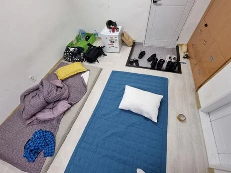
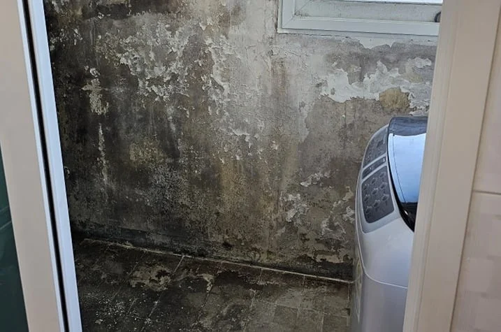
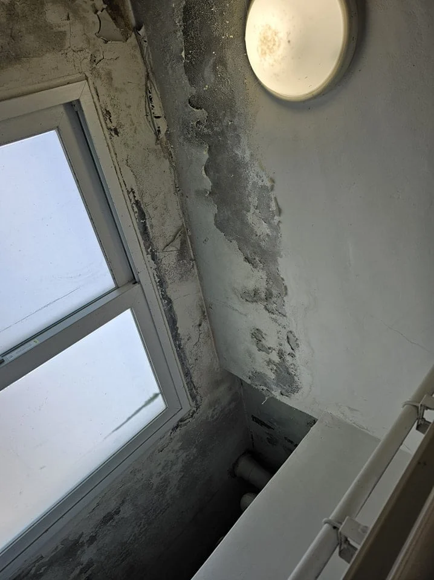
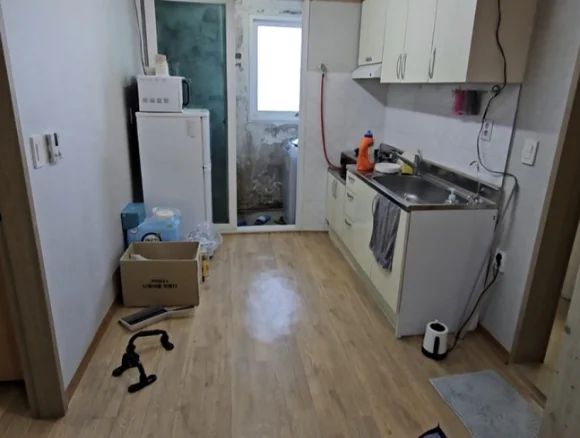
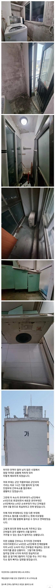

공군 비행단 영내숙소 씨발ㅋㅋ 한방에서 두명이 생활
아으 ~ 방수공사 안해서 물 흘러내리는 꼬라지



육군에서 결혼한 초급간부에게 주어지는 숙소라고 ㄷㄷ


공군 비행단 영내숙소 씨발ㅋㅋ 한방에서 두명이 생활
아으 ~ 방수공사 안해서 물 흘러내리는 꼬라지



육군에서 결혼한 초급간부에게 주어지는 숙소라고 ㄷㄷ

저거 팩트임
20년전에도 그랬으니 지금은 더 심할듯
와… 좆같네 진짜
저 좁은 원룸을 한방에서 두명 생활은 진짜 무슨 감옥임? 개도 저렇게 취급 안한다